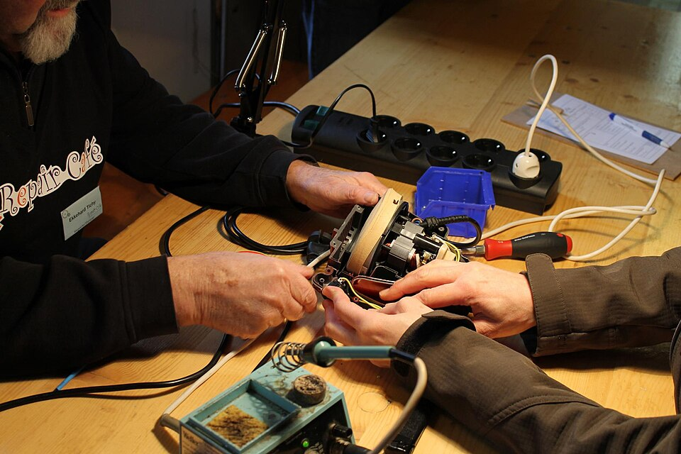

Kaj počne Center ponovne uporabe
Center ponovne uporabe izdelkom, ki jih ljudje ne potrebujejo več, poišče novega lastnika ali pa iz njih naredi nov izdelek. Pri tem sledi načelu, da je najboljši odpadek tisti, ki sploh ne nastane.
Pot izdelka od oddaje do nove uporabe
- Zbiranje in razvrščanje: obiskovalci v center prinesejo še uporabne izdelke, zaposleni jih razvrstijo.
- Pregled in obnova: izdelke očistijo, preverijo njihovo delovanje in jih po potrebi popravijo.
- Preoblikovanje (upcycling): iz materialov, ki jih ni mogoče prodati takšnih, kot so, nastanejo novi izdelki, na primer torbe, nahrbtniki in nakit.
- Prodaja: izdelki so po simboličnih cenah naprodaj v zelenih trgovinah ob centrih in v spletni trgovini.
- Ozaveščanje: CPU o ponovni uporabi in krožnem gospodarstvu izobražuje šole, podjetja in širšo javnost.
Katere izdelke lahko prineseš
Centri sprejemajo dobro ohranjene in še uporabne izdelke, na primer:
- manjše kose pohištva in opremo za dom,
- gospodinjske aparate in računalniško opremo,
- oblačila in drug tekstil,
- knjige in igrače,
- kolesa in športno opremo.
Vsak center ima nekoliko drugačna pravila, zato pred obiskom preveri podatke o posameznem centru.

Repair Café: popravimo skupaj
Repair Café je srečanje, na katerega prineseš pokvarjen izdelek, na primer manjši gospodinjski aparat, oblačilo ali kolo. Izkušeni popravljalci ti pomagajo ugotoviti, kaj je narobe, in ga skupaj z njimi poskusiš popraviti. Tako izdelek ne konča med odpadki, ti pa se naučiš nekaj novega.
V Centru ponovne uporabe Slovenske Konjice popravljalnica poteka vsak zadnji petek v mesecu. V CPU Ormož deluje tudi stalna popravljalnica oblačil in tekstila.
Prihajajoči termini Repair Café
Število mest je omejeno, zato pred obiskom pokliči CPU Slovenske Konjice na 031 608 556. Podatki o prostih mestih so informativni.
Dodatne informacije
Več o delovanju centra lahko preveriš neposredno pri organizatorju:
- Kaj je CPU (uradna stran)
- CPU Slovenske Konjice in Repair Café (uradna stran)
- Center ponovne uporabe na Facebooku (obvestila o dogodkih)
Socialno podjetje
CPU d.o.o. je registrirano kot socialno podjetje. To pomeni, da poleg ekonomskih zasleduje tudi družbene in okoljske cilje. Vsaj tretjino zaposlenih predstavljajo ljudje iz ranljivih skupin, pri delu pa občasno sodelujejo tudi prostovoljci.